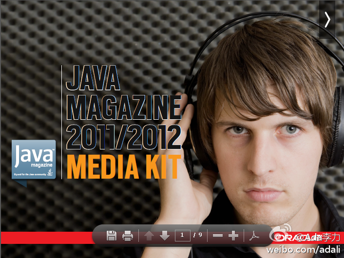

//@lijianchina：其实在任何一个成熟行业里都是擅长商业就是擅长赚钱更重要。因为技术创新风险大、收益低、推广难。所以应当在行业建立初，技术创新，抢滩登陆，拼命形成垄断，积攒资本等待日后收购技术进取型公司，然后再进行商业创新，组合新旧技术形成新的商业产品，构造新的商业模式。我猜O公司就@Ada李力:甲骨文出的"Java Magazine"可以免费订阅了, 两个月一期, 主要介绍Java语言, 和基于Java的应用程序. 网页链接 甲骨文果然很会做生意, 杂志刚办, 广告价格就列得很清楚了. 